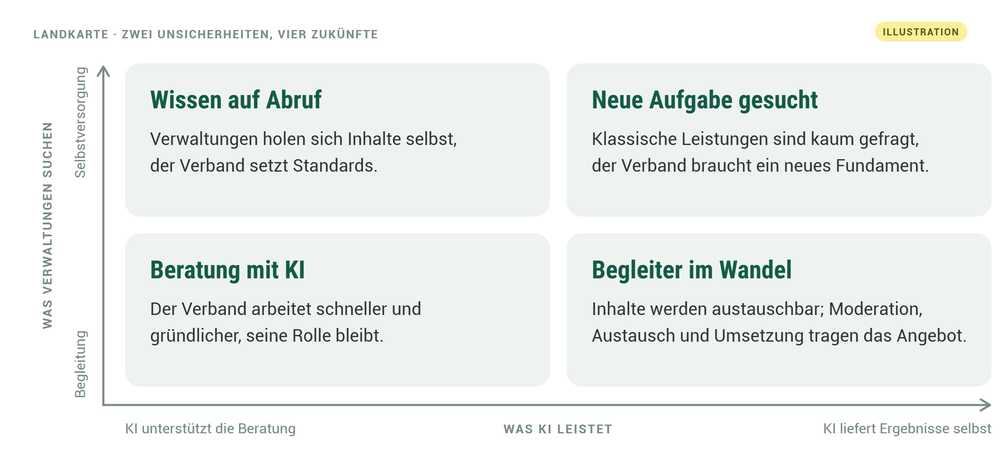
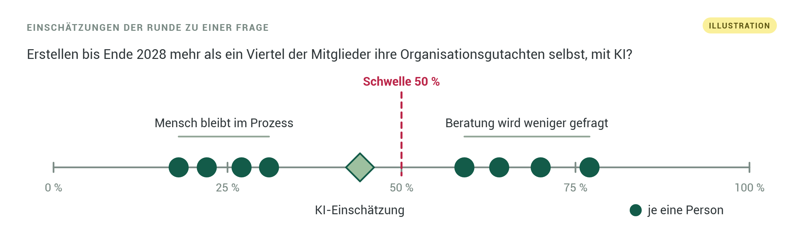

Welche Beratung brauchen Verwaltungen noch, wenn KI Gutachten schreibt?
Fallbeispiel
Welche Beratung brauchen Verwaltungen noch?
Ein Fachverband im öffentlichen Dienst prüft mit dem Perspektiv, ob sein Geschäftsmodell trägt. Aus unterschiedlichen Erwartungen im Verband entsteht ein gemeinsames Bild möglicher Zukünfte, mit Signalen, die zeigen, welche sich abzeichnet.
Fallbeispiel · Fachverband im öffentlichen Dienst
Die Leitfrage
Die Ausgangslage
Der Verband lebt von Wissen, das Menschen erarbeiten und weitergeben: Gutachten und Berichte, Handbücher mit bewährter Praxis, Vergleiche zwischen Verwaltungen, moderierte Arbeitskreise. Getragen wird das von den Beiträgen seiner Mitglieder.
KI kann Teile dieser Arbeit übernehmen: recherchieren, Entwürfe schreiben, Vergleichsdaten auswerten. Wie weit das reicht, wird im Verband unterschiedlich gesehen. Die einen erwarten, dass der Mensch im Prozess bleibt, weil Verwaltungen Erfahrung, Vertrauen und den Austausch untereinander suchen. Die anderen, nah an der täglichen Beratungsarbeit, rechnen damit, dass Reisen und Berichte weniger gefragt sein werden. Beide Sichten haben gute Gründe. Für Entscheidungen über Angebot und Personal braucht der Verband ein Bild, in dem beide Platz haben.
Zwei Ziele
Ein gemeinsames Bild
Aus den unterschiedlichen Erwartungen entsteht ein Bild möglicher Zukünfte, das der Verband teilt, auch wenn die Einschätzungen verschieden bleiben.
Signale für den richtigen Zeitpunkt
Prognosefragen mit Schwellen zeigen an, welche Zukunft näher rückt. So bleibt das Gespräch in Bewegung, und Entscheidungen fallen rechtzeitig.
Zwei Unsicherheiten, vier Zukünfte

Jede der vier Zukünfte verlangt etwas anderes vom Verband, und für jede lässt sich beobachten, ob sie näher rückt.
Beispiel zur Veranschaulichung.
Wie das Perspektiv die Sichten verbindet

Jede Person schätzt die Prognosefragen zunächst für sich ein. So wird sichtbar, wo die Erwartungen tatsächlich auseinanderliegen und wo nicht. Eine KI gibt zu jeder Frage eine eigene, begründete Einschätzung ab. Wo Runde, KI und die vereinbarte Schwelle auseinanderliegen, beginnt das Gespräch. Daraus entsteht der Zukunftsatlas: Er ebnet unterschiedliche Erwartungen nicht ein, sondern ordnet sie.
Beispiel zur Veranschaulichung.
Prognosefragen und Signale
Erstellen bis zum 31.12.2028 mehr als ein Viertel der Mitgliedsverwaltungen ihre Organisationsgutachten überwiegend selbst, mit eigenen KI-Werkzeugen?
Leistung: Organisationsgutachten · Schwelle: mehr als ein Viertel der Mitglieder · Stichtag: 31.12.2028 · Auflösung: Mitgliederbefragung des Verbands
Beispiel zur Veranschaulichung.
Weitere Signale
Mitgliedschaft: Liegt die Zahl der Austritte 2028 mehr als doppelt so hoch wie im Durchschnitt der Jahre 2023 bis 2025?
Nachfrage: Sinkt die Teilnahme an Arbeitskreisen in Präsenz 2028 um mehr als 20 % gegenüber 2025?
Wettbewerb: Bietet bis zum 31.12.2028 ein großer IT-Dienstleister für Kommunen ein KI-Modul an, das Leistungsvergleiche zwischen Verwaltungen automatisch erstellt?
Beispiele zur Veranschaulichung.
Wofür der Verband den Zukunftsatlas nutzt
Eine gemeinsame Grundlage
Zuversichtliche und skeptische Erwartungen stehen auf derselben Landkarte. Gesprochen wird über Signale, nicht über Haltungen.
Leistungen prüfen
Für Gutachten, Handbücher, Vergleiche und Arbeitskreise wird sichtbar, in welcher Zukunft sie tragen und wo sich das Angebot verändern muss.
Rechtzeitig entscheiden
Schwellen zeigen an, wann über Angebot, Personal und Investitionen neu zu sprechen ist.
Ausblick
Werden die Fragen dauerhaft wichtig, kann aus dem Perspektiv ein Radar werden. Dann schätzen auch Mitgliedsverwaltungen ein, und ihre Einschätzungen sind selbst ein Signal für die künftige Nachfrage.
Weitere Fallbeispiele
Wer wird Wettbewerber, wer wird Kunde?
Ein führender Fachverlag beziffert mit seinen Marktbeobachtern, einer Crowd und KI vier mögliche Zukünfte und knüpft Investitionen an Signale.
Wohin entwickelt sich die regionale Wertschöpfung?
Eine Kammer verbindet Prognosefragen, menschliches Wissen und KI für Prioritäten und die Orientierung ihrer Mitglieder.
Wie viele Menschen braucht die Stadt in fünf Jahren?
Eine Großstadtverwaltung verbindet das Wissen ihrer Ämter und Bezirke zu einer strategischen Personalplanung, mit dem Perspektiv als Strategie-Starter und dem Radar.
Ihr Thema ist nicht dabei?
Die Fallbeispiele zeigen einen Ausschnitt. Beschreiben Sie uns Ihr Thema, und wir schlüsseln es für Sie auf.